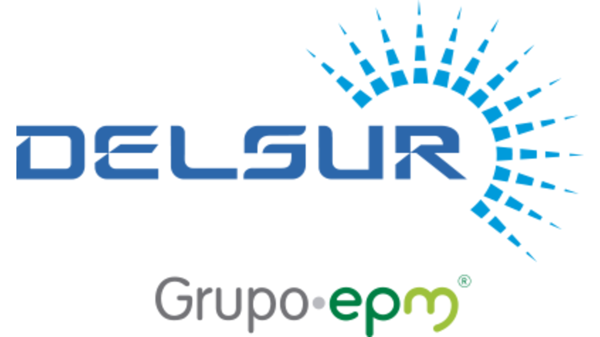

Búsqueda Geográfica Elementos De La Red DELSUR Región 3

Selecciona tipo de búsqueda:
Por Placa
Por Contrato
Por Ubicación
📍 Mi Ubicación Actual
Buscar
Limpiar
Si no ingresó su ubicación actual debe ingresar las coordenadas manualmente.